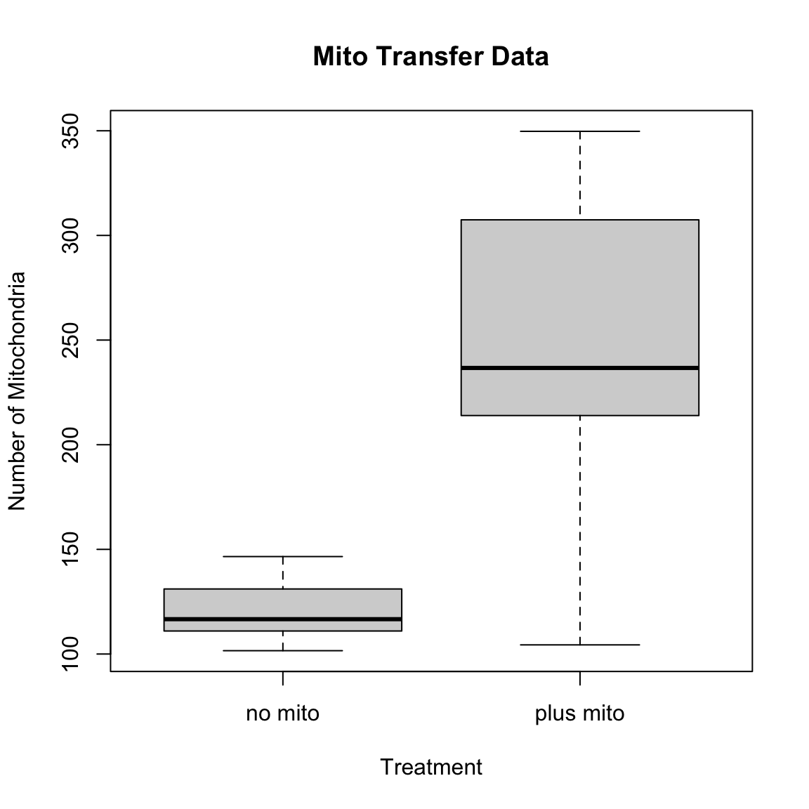

My dataset is (loosely) based on an experiment I ran where I used centrifugation to get cells to uptake exogenous mitochondria. Thus, I have two groups, one that did not receive any extra mitochondria, and one that did. The metric I am using here is the total number of mitochondria per cell that were counted when the cells were imaged.
In my real dataset from this experiment, I have six replicates of each condition. The mean number of mitochondria in the the untreated cells was about 130 with a standard deviation of about 17, whereas the treated cells had about 230 mitochondria with a larger standard deviation of 54.
Using these numbers and the rnorm function, I made fake data sets for each of these conditions, then put the data into a data frame.
# make data
no_mito <- rnorm(6, mean=130, sd=17)
plus_mito <- rnorm(6, mean=230, sd=54)
# put data into a dataframe
Number_of_mitochondria <- c(no_mito,plus_mito)
Treatment_condition <- c(rep("no mito", length(no_mito)),rep("plus mito",length(plus_mito)))
mito_frame <- data.frame(Number_of_mitochondria, Treatment_condition)
print(mito_frame)## Number_of_mitochondria Treatment_condition
## 1 118.48219 no mito
## 2 139.17485 no mito
## 3 136.87711 no mito
## 4 116.99715 no mito
## 5 129.76848 no mito
## 6 86.07295 no mito
## 7 243.55425 plus mito
## 8 290.38474 plus mito
## 9 299.24824 plus mito
## 10 239.24216 plus mito
## 11 252.86971 plus mito
## 12 210.65544 plus mitoNext, I checked the mean and standard deviation of the data:
## [1] 121.2288## [1] 19.49995# find mean and standard deviation of plus_mito
mean(mito_frame[(length(no_mito)+1):(length(no_mito)+length(plus_mito)),1])## [1] 255.9924## [1] 33.32978Since there are only two groups her I performed a T-test, as well as making a simple box plot to visualize the data.
# Perform a T-test
stat <- t.test(Number_of_mitochondria ~ Treatment_condition, data = mito_frame)
print(stat$p.value)## [1] 2.57311e-05#Make a boxplot
boxplot(Number_of_mitochondria~Treatment_condition,data=mito_frame, main="Mito Transfer Data",
xlab="Treatment", ylab="Number of Mitochondria")
Because I was already seeing a significant p-value at 6, I wrote a for loop to see if a lower replicate number with the same effect size would still be significant.
replicates <- 3:6
for (i in replicates){
no_mito <- rnorm(i, mean=130, sd=17)
plus_mito <- rnorm(i, mean=230, sd=54)
Number_of_mitochondria <- c(no_mito,plus_mito)
Treatment_condition <- c(rep("no mito", length(no_mito)),rep("plus mito",length(plus_mito)))
mito_frame <- data.frame(Number_of_mitochondria, Treatment_condition)
stat <- t.test(Number_of_mitochondria ~ Treatment_condition, data = mito_frame)
cat("Replicates=",i,"P-value=")
print(stat$p.value)
}## Replicates= 3 P-value=[1] 0.01424447
## Replicates= 4 P-value=[1] 0.00287257
## Replicates= 5 P-value=[1] 0.005857561
## Replicates= 6 P-value=[1] 0.0112209(I’m sure there is a more elegant way to do this, but this was what I was able to figure out)
After running this a few times, it appears that with this effect size, it takes at least four replicates for the data to consistently be significant, though down to 3 is occasionally significant.
Next, I wanted to check if a smaller effect size would decrease the significance. For this I decided to go back to six as the number of replicates, and keep the average number of mitochondria in the untreated the same while increasing the effect size.
mean_dif <- seq(from=10, to=100, by=10)
for (i in mean_dif){
no_mito <- rnorm(6, mean=130, sd=17)
plus_mito <- rnorm(6, mean=(130+i), sd=54)
Number_of_mitochondria <- c(no_mito,plus_mito)
Treatment_condition <- c(rep("no mito", length(no_mito)),rep("plus mito",length(plus_mito)))
mito_frame <- data.frame(Number_of_mitochondria, Treatment_condition)
stat <- t.test(Number_of_mitochondria ~ Treatment_condition, data = mito_frame)
cat("Mean Difference=",i,"P-value=")
print(stat$p.value)
}## Mean Difference= 10 P-value=[1] 0.3366025
## Mean Difference= 20 P-value=[1] 0.1770185
## Mean Difference= 30 P-value=[1] 0.2644861
## Mean Difference= 40 P-value=[1] 0.01017176
## Mean Difference= 50 P-value=[1] 0.06977063
## Mean Difference= 60 P-value=[1] 0.00177679
## Mean Difference= 70 P-value=[1] 0.0001680616
## Mean Difference= 80 P-value=[1] 0.003966159
## Mean Difference= 90 P-value=[1] 0.04646122
## Mean Difference= 100 P-value=[1] 0.002440856Running this for loop a few times suggested that the effect size must be an increase of at least 70 mitochondria per cell to be consistently significant.